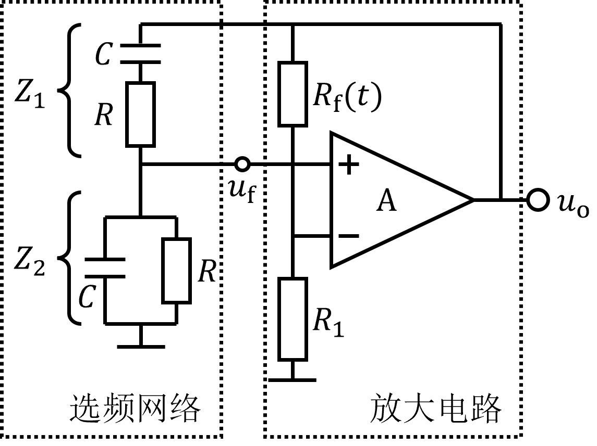

桥式\( RC \)正弦波振荡电路

由运算放大器、非线性电阻\( R_\mathrm{f}(t) \)、电阻\( R_1 \)构成同相比例放大电路，非线性电阻\( R_\mathrm{f}(t) \)用于稳定振幅； \( RC \)串联和\( RC \)并联构成选频网络，同时也是正反馈网络。
参数调节
电阻 \(R (\mathrm{kΩ})\)：
$10$
电容 \(C (\mathrm{nF})\)：
$10$
增益 \(1+\frac{R_\mathrm{f}}{R_1}\)：
$3.0$
振荡频率
\(f_0 = \dfrac{1}{2\pi RC}\)
\(= 1591.55 \ \mathrm{Hz}\)
开始仿真
停止仿真
未运行
输出波形 \(u_\mathrm{o}\)